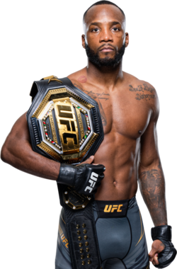

Leon Edwards, conocido como “Rocky”, es un peleador profesional de artes marciales mixtas que compite en la división de peso wélter de la UFC. Nació el 25 de agosto de 1991 en Kingston, Jamaica. Durante su infancia se mudó al Reino Unido, donde creció en la ciudad de Birmingham. Su vida en la juventud estuvo marcada por dificultades y un entorno complicado, pero encontró en las artes marciales mixtas una forma de disciplina y superación. A través del entrenamiento y la dedicación logró transformar su vida y convertirse en uno de los peleadores más respetados del MMA moderno.

Leon Edwards se hizo conocido internacionalmente cuando comenzó a competir en la Ultimate Fighting Championship (UFC). A lo largo de su carrera fue construyendo una impresionante racha de victorias que lo llevó a posicionarse entre los mejores peleadores de la división wélter. Uno de los momentos más históricos de su carrera ocurrió en 2022 cuando derrotó a Kamaru Usman por nocaut con una espectacular patada a la cabeza en los últimos segundos del combate, ganando así el campeonato de peso wélter de la UFC. Ese nocaut es considerado uno de los más impactantes en la historia del deporte. Posteriormente defendió su título demostrando su evolución como peleador completo, con habilidades tanto en el striking como en el grappling.
Durante su carrera en MMA ha competido principalmente en:
Leon Edwards es reconocido por:
Gracias a su disciplina, inteligencia táctica y evolución constante, Leon Edwards logró consolidarse como uno de los campeones más completos de la división wélter. Su historia es un ejemplo de perseverancia, demostrando cómo el trabajo duro puede llevar a un atleta desde un entorno difícil hasta la cima del deporte mundial.
El estilo de pelea de Leon Edwards combina técnicas de striking muy refinadas con un sólido juego de grappling. Utiliza patadas frontales, golpes rectos y movimientos inteligentes para controlar el ritmo de la pelea. Además, posee una gran capacidad para adaptarse a diferentes oponentes, lo que lo convierte en un peleador muy difícil de derrotar dentro del octágono.
Otros peleadores que podrían interesarte: